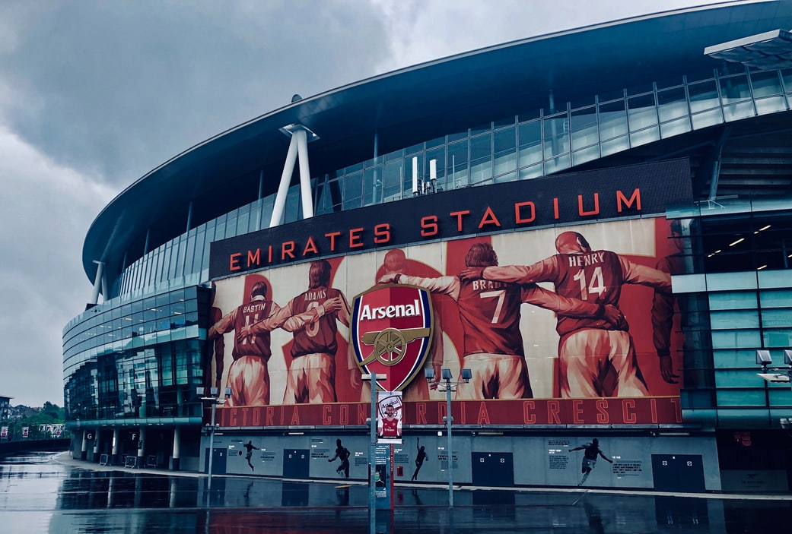

영국 프로축구 1부리그인 프리미어리그 (premier League)  오랜 역사를 지닌 명문클럽이며, 정식명칭은 '아스널 축구클럽(Arsenal Football Club)'이다. '아스널'은 '무기 창고'라는 뜻이다. 클럽 애칭은 총잡이(Gunners)이다.
지금까지 1부 리그에서 13회 우승하여 리버풀 FC, 맨체스터 유나이티드 FC에 이어 세번째 최다우승팀이다.